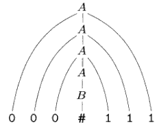

Torna alla pagina di Informatica Teorica
:: Informatica Teorica - Linguaggi liberi dal contesto ::
Appunti & Dimostrazioni del 17 Marzo
Concetti iniziali
Gli automi a stati finiti ci permettono di descrivere linguaggi, ma solo quelli regolari. E tutti gli altri? C'è bisogno di strumenti più potenti, come le grammatiche libere dal contesto, che permettono di generare - manco a dirlo - linguaggi liberi dal contesto.
Una grammatica consiste in un insieme di regole di sostituzione, ognuna delle quali appare come una riga formata da un simbolo e una stringa separati da una freccia, ad esempio: A->CA50. I simboli a sinistra della freccia (generalmente lettere maiuscole) sono chiamati variabili, mentre le stringhe a destra possono essere composte da variabili o altri simboli chiamati terminali. Tra tutte le variabili ce n'è una chiamata variabile iniziale, che in genere compare nella parte sinistra della prima regola.
Facciamo un esempio definendo una grammatica G1:
A->0A1
A->B
B->#
In G1 abbiamo due variabili (A e B, di cui A è quella iniziale) e tre simboli terminali (0, 1 e #).
Come si usa una grammatica
Il sistema con cui le grammatiche permettono di descrivere un linguaggio, passa attraverso la generazione di ogni sua stringa. Per farlo bisogna seguire alcuni passaggi:
- scrivere la variabile iniziale;
- per ogni variabile, trovare una regola in cui essa compaia nella parte sinistra (rispetto alla freccia);
- sostituire la variabile con la parte destra della regola;
- ripetere (2) e (3) finché non rimangono variabili.
Ad esempio, che stringhe genera la nostra grammatica G1? Dovremo ripetere i passi appena descritti facendo le opportune sostituzioni, secondo una sequenza che prende il nome di derivazione. Facciamo allora una derivazione di G1:
A --> 0A1 --> 00A11 --> 000A111 --> 000B111 --> 000#111
r.1 r.1 r.1 r.2 r.3
, dove ad esempio "r.1" indica l'applicazione della regola 1 della grammatica. Si noti che questa è solo una delle possibili stringhe ottenibili da G1, un'altra sarebbe potuta essere 00#11, ottenuta con questa derivazione:
A --> 0A1 --> 00A11 --> 00B11 --> 00#11
r.1 r.1 r.2 r.3
I possibili percorsi di derivazione possono essere mostrati graficamente con i parse tree. Ad esempio il parse tree per la stringa 000#111 nella grammatica G1 è:

Per far capire che con le grammatiche libere dal contesto si possono descrivere linguaggi ben più complicati, facciamo un esempio di grammatica G2 che descriva una porzione della lingua italiana:
<frase> -> <soggetto-frase> <predicato-frase>
<soggetto-frase> -> <nome-comp> | <nome-comp> <preposiz-frase>
<predicato-frase> -> <predicato-comp> | <predicato-comp> <preposiz-frase>
<preposiz-frase> -> <preposiz> <nome-comp>
<nome-comp> -> <articolo> <nome>
<predicato-comp> -> <predicato> | <predicato> <soggetto-frase>
<articolo> -> un | il
<nome> -> cinghiale | postino | tornado
<predicato> -> amoreggia | rincorre | parla
<preposiz> -> con
Con cui ad esempio si può formare l'illuminante frase "il tornado rincorre un postino", o la seguente "un cinghiale amoreggia con il postino":
<frase> -> <soggetto-frase> <predicato-frase>
-> <nome-comp> <predicato-frase>
-> <articolo> <nome> <predicato-frase>
-> <articolo> <nome> <predicato-comp> <preposiz-frase>
-> <articolo> <nome> <predicato> <preposiz-frase>
-> <articolo> <nome> <predicato> <preposiz> <nome-comp>
-> <articolo> <nome> <predicato> <preposiz> <articolo> <nome>
-> un <nome> <predicato> <preposiz> <articolo> <nome>
-> un cinghiale <predicato> <preposiz> <articolo> <nome>
-> un cinghiale amoreggia <preposiz> <articolo> <nome>
-> un cinghiale amoreggia con <articolo> <nome>
-> un cinghiale amoreggia con il <nome>
-> un cinghiale amoreggia con il postino
Tempi duri per i postini.
Definizione formale
Diamo finalmente la definizione di grammatica libera dal contesto, o CFG (context-free grammar).
Una grammatica libera dal contesto è una 4-upla (V,Σ,R,S), dove:
- V è l'insieme finito delle variabili;
- Σ è l'insieme finito, disgiunto da V, dei terminali;
- R è l'insieme finito delle regole, ognuna formata da una variabile e da una stringa di variabili e terminali;
- S ∈ V è la variabile iniziale.
Siano u, v e w stringhe di variabili e terminali, e A->w una regola della grammatica, possiamo dire che uAv genera uwv, e lo scriviamo come uAv->uwv. Diciamo che u deriva v, scritto u-*->v (una freccia con l'asterisco sopra), se u=v o se la sequenza u1,u2,..,uk esiste per k>=0 e
u->u1->u2->..->uk->v
A questo punto possiamo definire il linguaggio della grammatica come:
{w ∈ Σ* | S-*>w}
Riportandola sul pratico, nella nostra vecchia cara grammatica G1 avremo che:
- V = {A,B}
- Σ = {0,1,#}
- S = A
- R = "A->0A1", "A->B", "B->#"
Ambiguità
Una grammatica potrebbe generare la stessa stringa in modi diversi, seguendo diverse derivazioni; ne consegue che la stringa avrebbe più parse tree, e quindi più significati. Questo non è un problema di per sé, ma lo diventa per certi tipi di applicazioni in cui l'interpretazione di una stringa deve essere univoca, come ad esempio nei linguaggi di programmazione.
Se una stessa stringa è generata da una grammatica in modi diversi, allora si dice che la stringa è derivata in modo ambiguo. Intuitivamente, una grammatica G si dice ambigua se genera una stringa in modo ambiguo.
Esercizietto 1
Data la grammatica G3 = ({S},{a,b},R,S} e l'insieme di regole S->aSb|SS|ε , generare alcune stringhe appartenenti a L(G3).
Soluzione
S --> aSb --> aaSbb --> aaSSbb --> aaaSbaSbbb --> aaababbb
r.1 r.1 r.2 r.1 r.3
oppure possono uscire cose come: abab, aaabbb, aabaabbb.
Esercizietto 2
Determinare la grammatica per il linguaggio:
{0n1n | n>=0}U{1n0n | n>=0}
Soluzione
Dovrò definire separatamente una grammatica per la prima e la seconda parte, poi ne faccio un unione aggiungendo una nuova regola iniziale (qualcosa di molto simile a quanto visto nel capitolo del nondeterminismo). In pratica se abbiamo k grammatiche da unire, la nuova grammatica avrà come prima regola:
S -> S1 | S2 | ... | Sk
, dove le variabili Si sono le variabili iniziali di ogni grammatica.
Torniamo al nostro esercizio e costruiamo la grammatica S1 per la prima parte del linguaggio, e la S2 per la seconda.
Linguaggio L1: {0n1n | n>=0}
Grammatica G1: S1 -> 0S11 | ε
Linguaggio L2: {1n0n | n>=0}
Grammatica G2: S2 -> 1S10 | ε
Per quanto detto finora, facendo l'unione di G1 e G2 otteniamo:
S -> S1 | S2
S1 -> 0S11 | ε
S2 -> 1S10 | ε
Forma normale di Chomsky
La forma normale di Chomsky ci permette di riscrivere una grammatica libera dal contesto in forma più compatta e semplificata. Ci tornerà molto utile in futuro, soprattutto se non sappiamo che nome dare al secondo criceto ("Chomsky & Pumping-lemma", that's all folks!).
Una CFG è nella forma normale di Chomsky se ogni regola è nella forma:
A -> BC
A -> a
, dove a è un qualsiasi terminale, A B e C sono una qualsiasi variabile, ma solo A è variabile iniziale. E' inoltre consentita la regola S -> ε, dove S è la variabile iniziale.
Teorema 1 - sulla forma normale di Chomsky
Ogni linguaggio libero dal contesto è generato da una grammatica libera dal contesto nella forma normale di Chomsky.
Dimostrazione
Dato che per definizione un linguaggio libero dal contesto è generato da una CFG, non dobbiamo fare altro che dimostrare che ogni grammatica libera dal contesto G può essere espressa nella forma normale di Chomsky. Lo facciamo per costruzione, scandendo i vari passi.
Passo (1)
Definiamo una nuova variabile iniziale S0 e aggiungiamo la regola:
S0->S
, dove S era la variabile iniziale di G.
Passo (2)
Dobbiamo far sparire tutte le regole espresse nella forma A->ε, dove A è una variabile diversa da quella iniziale. Si fa in due tempi:
- eliminiamo tutte le regole nella forma A->ε;
- per ogni occorrenza di A nella parte destra di una regola, aggiungiamo una nuova regola in cui A non vi compare. In pratica, se abbiamo una regola del tipo
R->uAv (dove u e v sono stringhe di variabili e/o terminali), la facciamo diventare: R->uAv|uv.
Passo (3)
Dobbiamo far sparire tutte le regole unitarie espresse nella forma A->B. Anche in questo caso si opera in due tempi:
- eliminiamo tutte le regole unitarie nella forma A->B;
- ogni volta che appare la regola
B->u, aggiungiamo la regola A->u.
Passo (4)
Concludiamo la costruzione convertendo tutte le altre regole nella forma appropriata. In particolare dovremo individuare ogni regola del tipo:
A -> u1u2..uk, con k>=3 e ogni ui variabile o terminale
, e sostituirla con le regole:
A -> u1A1
A1 -> u2A2
A2 -> u3A3
...
Ak-2 -> uk-1uk, dove le varie Ai sono nuove variabili.
Quando arriviamo ad avere tutte regole con k=2, sostituiamo il terminale ui nelle regole precedenti con la nuova variabile Ui, e aggiungiamo la regola: Ui->ui.
Esempio di conversione
Tra il dire e il fare c'è di mezzo il mare. Imbarchiamoci per convertire una CFG nella corrispettiva forma normale di Chomsky.
La grammatica G da convertire è la seguente:
S -> ASA | aB
A -> B | S
B -> b | ε
Applichiamo il Passo (1)
aggiungiamo una nuova variabile iniziale
S0 -> S
S -> ASA | aB
A -> B | S
B -> b | ε
Applichiamo il Passo (2)
eliminiamo la regola B->ε
S0 -> S
S -> ASA | aB | a
A -> B | S | ε
B -> b | ε
eliminiamo la regola A->ε
S0 -> S
S -> ASA | aB | a | SA | AS | S
A -> B | S | ε
B -> b
Applichiamo il Passo (3)
eliminiamo la regola unitaria S->S
S0 -> S | ASA | aB | a | SA | AS
S -> ASA | aB | a | SA | AS | S
A -> B | S
eliminiamo la regola unitaria S0->S
S0 -> S | ASA | aB | a | SA | AS
S -> ASA | aB | a | SA | AS
A -> B | S
eliminiamo la regola unitaria A->B
S0 -> ASA | aB | a | SA | AS
S -> ASA | aB | a | SA | AS
A -> B | S | b
eliminiamo infine la regola unitaria A->S
S0 -> ASA | aB | a | SA | AS
S -> ASA | aB | a | SA | AS
A -> S | b | ASA | aB | a | SA | AS
B -> b
Applichiamo il Passo (4)
convertiamo le regole rimanenti nella forma appropriata
S0 -> AA1 | UB | a | SA | AS
S -> AA1 | UB | a | SA | AS
A -> b | AA1 | UB | a | SA | AS
A1 -> SA
U -> a
B -> b
Torna alla pagina di Informatica Teorica